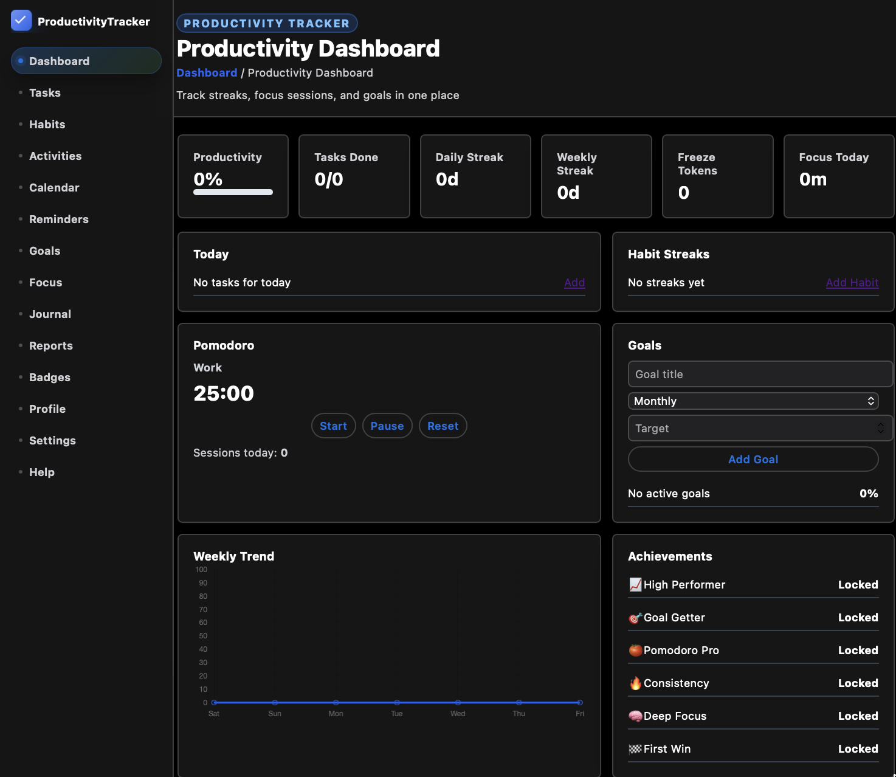
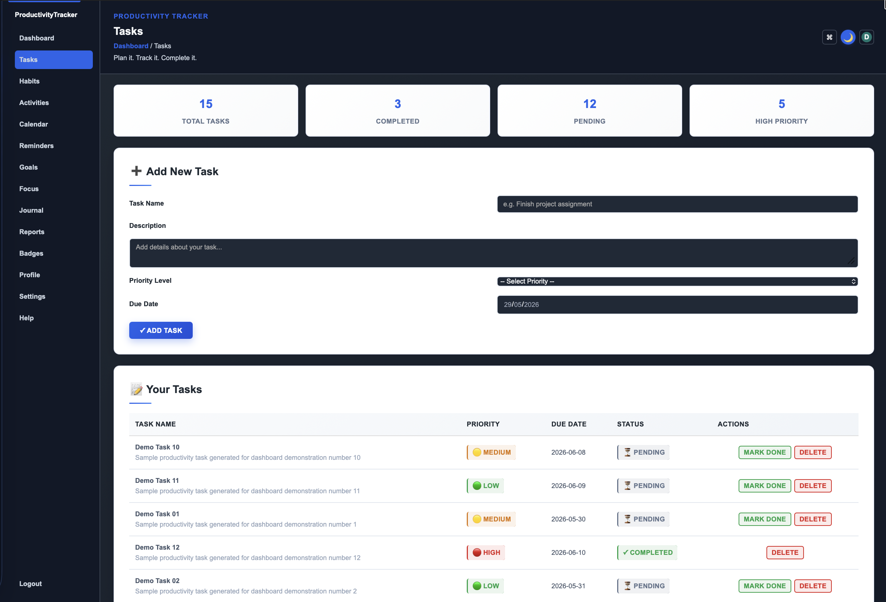
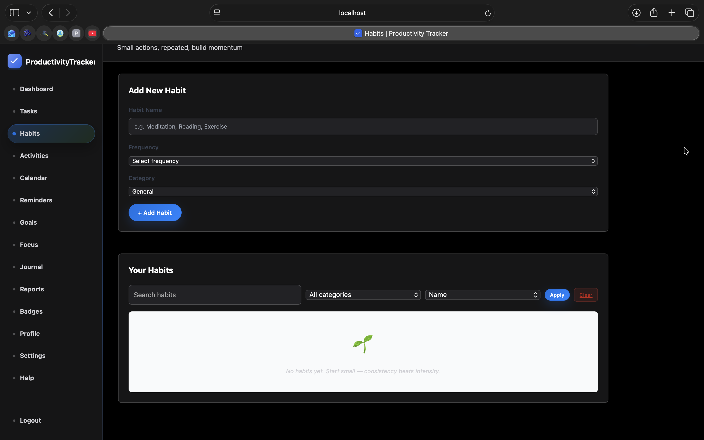
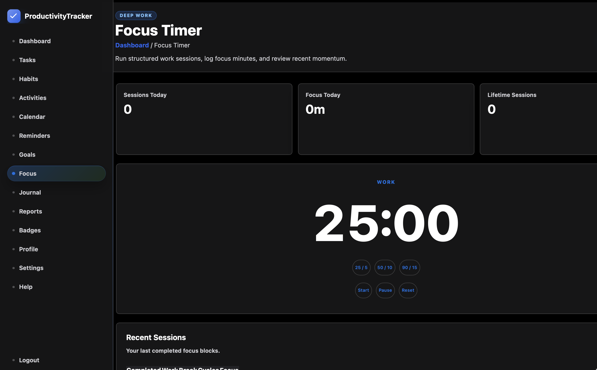
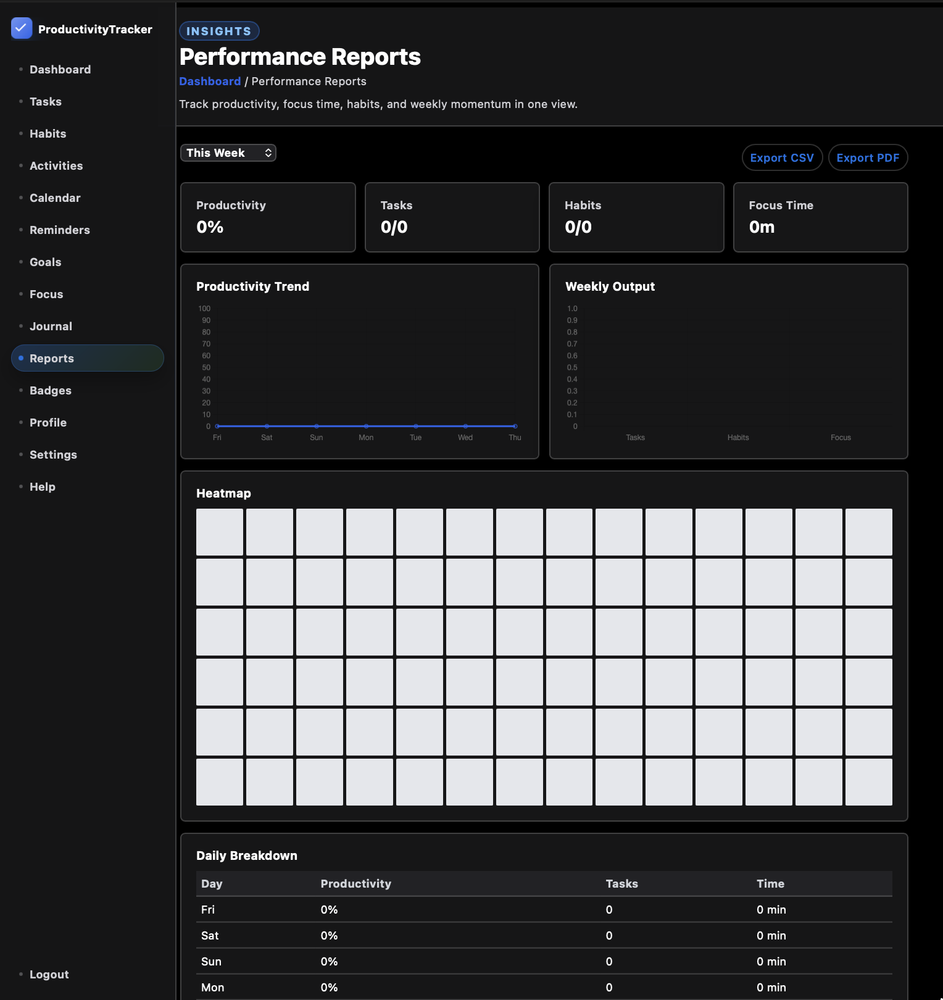
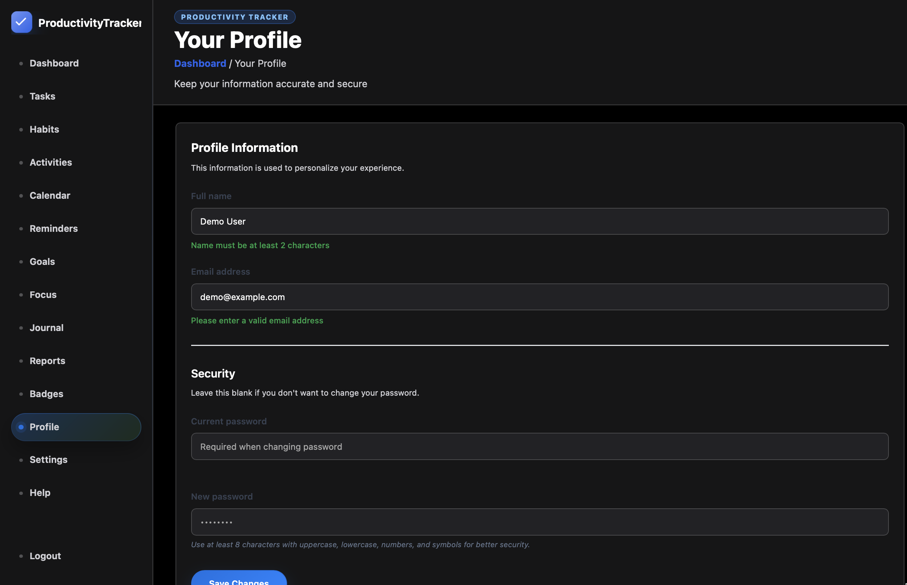
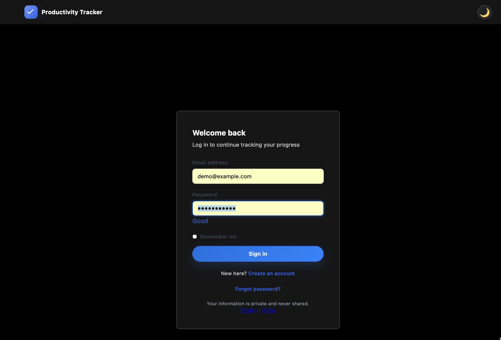
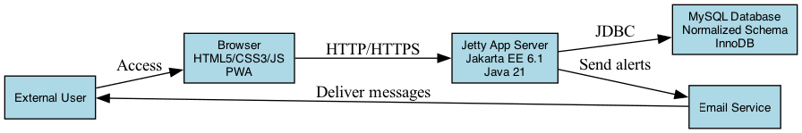
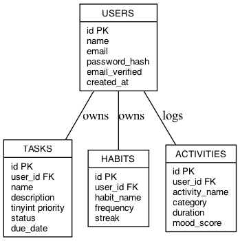

✅
Task Management
Create, prioritize, update, complete, and review tasks from focused JSP screens.
Java Servlet Productivity Platform
ProductivityTracker is a Java web application for tasks, habits, goals, reminders, focus sessions, journal entries, achievements, analytics, and reports.

Modules cover planning, tracking, focus, reporting, and account management.
Create, prioritize, update, complete, and review tasks from focused JSP screens.
Track consistency, completions, current streaks, best streaks, and progress history.
Use goals and Pomodoro sessions to connect long-term intent with daily execution.
Review productivity events by date and schedule reminders around important work.
Analyze task completion, activity trends, habit performance, and productivity metrics.
Includes authentication screens, CSRF helpers, filters, validation, and session utilities.
Static previews from the Java web application.






The project follows a Servlet controller, service, DAO, model, and JSP view structure.


Core runtime and tooling used by the project.
GitHub Pages hosts this static showcase. The live Servlet app needs a Java runtime and database.
git clone git@github.com:Mayank-Chaubey/ProductivityTracker.git
cd ProductivityTracker
docker compose up --build
# App URL:
# http://localhost:8081/ProductivityTracker